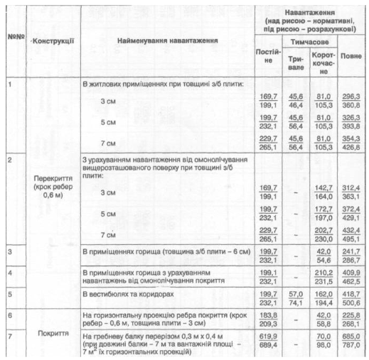

Опис
| №№ | Конструкції | Найменування навантаження | Навантаження ( над рисою - нормативні під рисою - розрахункові) | |||
| Постійне | Тимчасове | Повне | ||||
| Тривале | Короткочасне | |||||
| 1 | Перекриття (крок ребер 0,6 м) |
В житлових приміщеннях при товщині з/п плити:
3 см 5 см 7 см |
|
|
|
|
| 2 |
З урахуванням від омонолічування вищерозташованого поверху при товщині з/п плити:
3 см 5 см 7 см |
|
- - - |
|
|
|
| 3 | В приміщеннях горища (товщина з/б плити - 6 см) | - | ||||
| 4 | В приміщеннях горища з урахуванням навантаженб від омонолічування покриття | - | ||||
| 5 | В вестибюлях та коридорох | |||||
| 6 | Покриття | На горизонтальну проекцію ребра покриття (крок ребер - 6 см товщина плити - 3 см) | - | |||
| 7 | На гребневу балку перерізом 0,3 м х 0,4 м (при довжині балки - 7 м та вантажній площі - 7 м^2 їх горизонтальних проекціях) | - | ||||